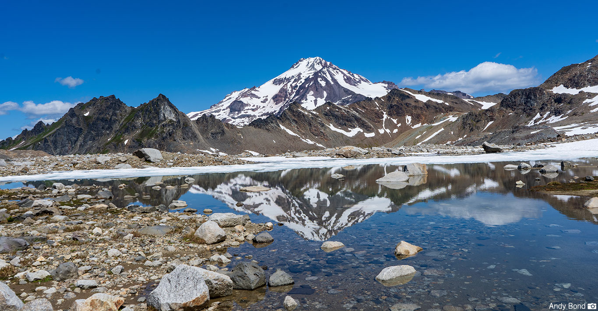
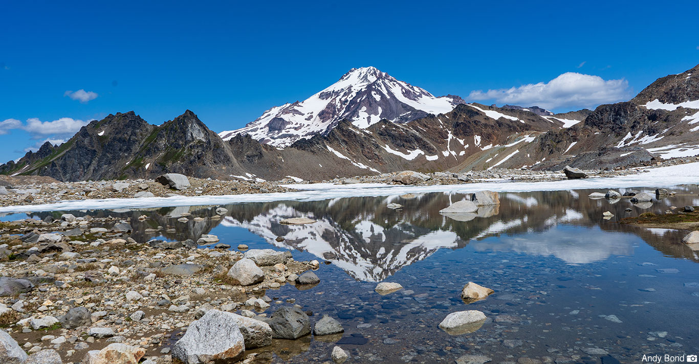
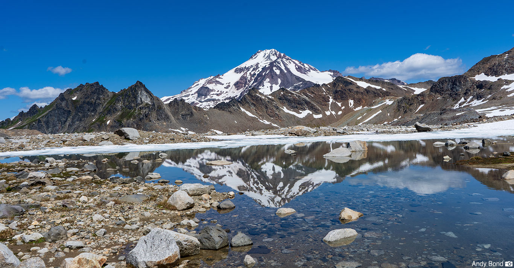

Nestled within the rugged wilderness of the North Cascades in Washington State, Glacier Peak emerges as a towering sentinel of volcanic beauty and ecological diversity. Standing at 10,541 feet (3,213 meters) above sea level, this stratovolcano, though not as widely known as its iconic neighbor Mount Rainier, holds a unique allure for outdoor enthusiasts and adventurers seeking solitude and untouched wilderness. With its glaciated slopes, pristine alpine lakes, and dense forests, Glacier Peak Wilderness offers a sanctuary for hikers, backpackers, and nature lovers, providing an immersive experience in one of the Pacific Northwest's most remote and awe-inspiring landscapes. As you delve further into the heart of Glacier Peak Wilderness, the landscape reveals its secrets. The dense forests give way to alpine meadows, where wildflowers carpet the ground during the brief summer months. Here, elusive creatures like the mountain goat and the wolverine roam freely, leaving their traces in the snow. Glacier Peak Wilderness invites you to disconnect from the noise of modern life and reconnect with the ancient rhythms of nature. It’s a place where time slows down, and every step carries you deeper into wonder and solitude.
